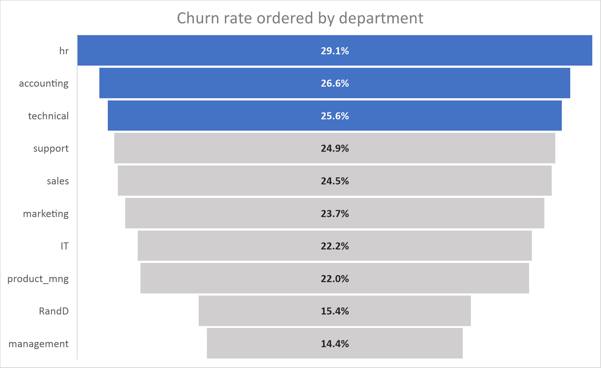
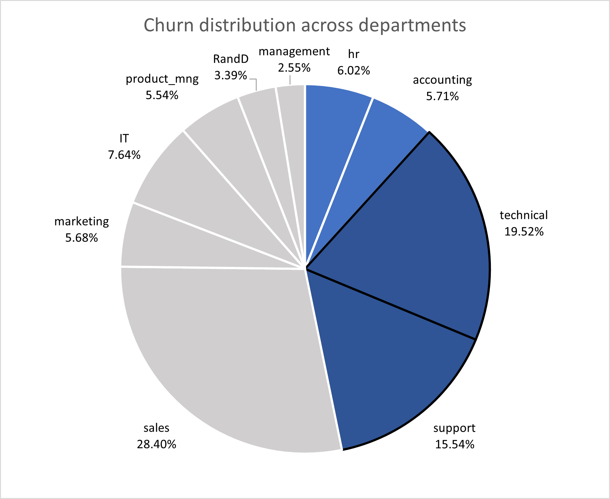
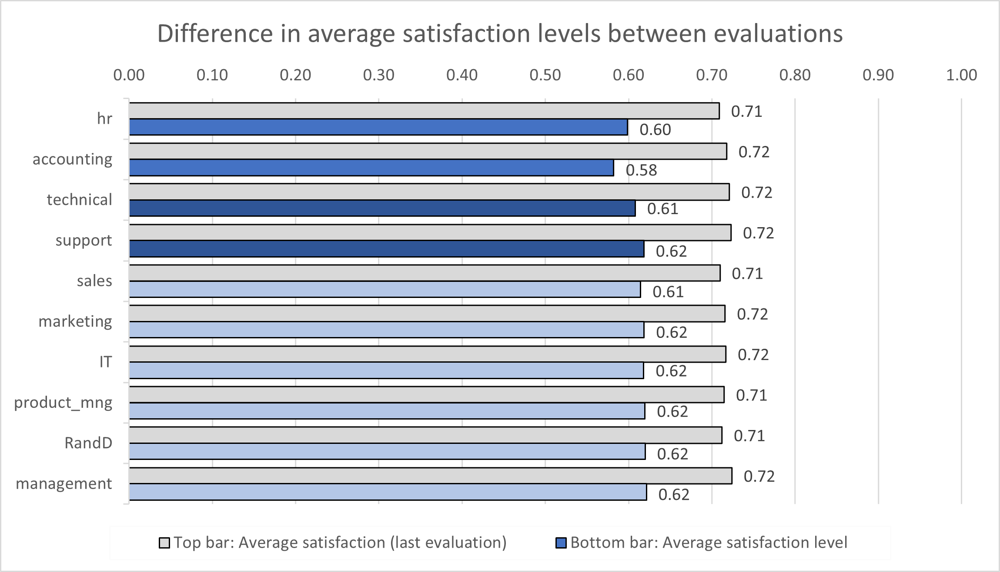
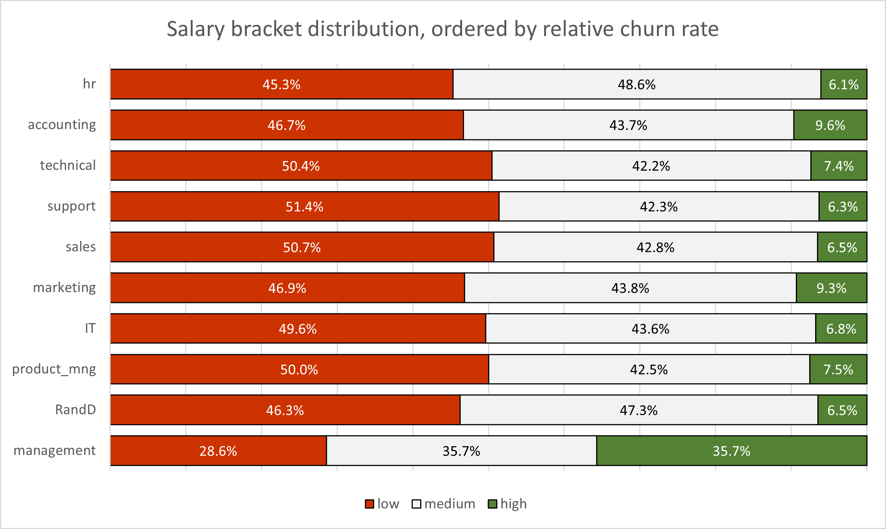
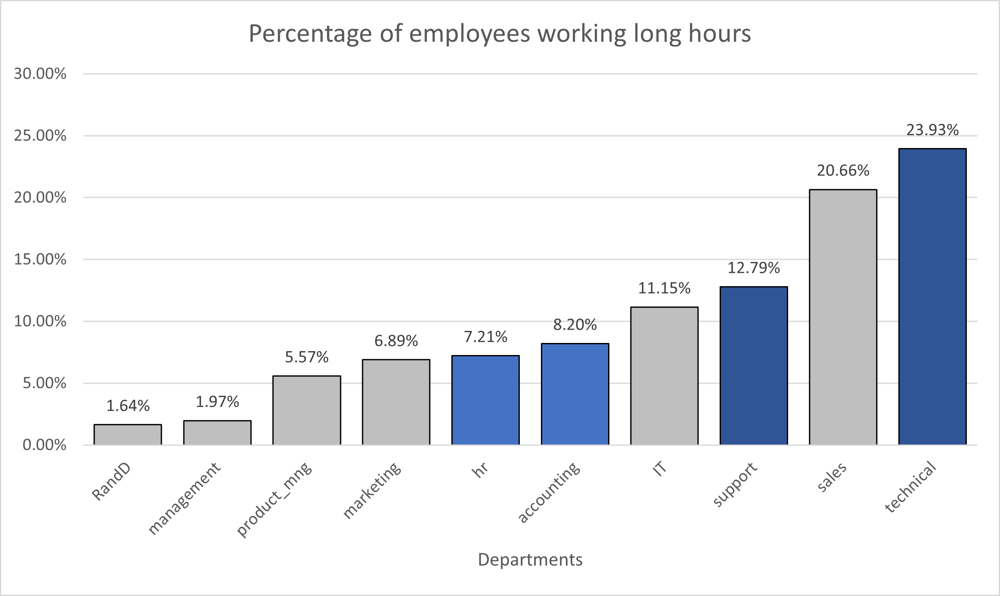

Return to home page
Project #1
HR Data Analysis - A brief investigation into churn rates across various departments
As the title suggests, this project is a simple yet fairly realistic glimpse into the type of ad-hoc reports any HR department could request from a data analyst,
on top of one's usual projects. Therefore this article doesn't intend to dive into the statistical nuances of churn rates and employment trends, but rather aims to give a brief
open-ended overview into the common factors in an easily digestable presentation to guide future decision-making within HR.
Hiring and training new employees is a costly process - it's the culmination of HR's time to enquire about the specifics of the role, post the job on several platforms,
regularly screen through resumes, arrange select candidates for interviews (which requires a schedule deviation), several rounds of this, and once paperwork is complete,
it costs not only other employees' time to train the new hire, but also the firm incurring significant short-term productivity deficits. My report gives a general overview on
churn rates but aims to find a compromise in favour of jobs requiring greater training costs, in order to maximise the return made from a lengthy hiring process in the long run.
I collected the dataset from kaggle.
Through 15,000 observations, the data measures the following variables from employees of each department:
- Satisfaction level (current / time of resignation)
- Satisfaction level, 3 years ago
- Average hours worked per month
- Number of years spent at company
- Relation with company {1 if resigned/fired, 0 otherwise}
- Salary (in three pre-determined brackets)
Analysis
To observe these variables independently, I first created a pivot table to distinguish the proportion of former employees in each department -
turning these values into a % of the total # of employees in their respective department gives the churn rate, the gold standard by which we will assess all other variables.

Looking at the funnel graph above, a lot of departments are dealing with churn rates (relative to department) in the 25% (+/- 2%) range.
Having highlighted the top three categories, based on relative churn rate. To understand the actual (ie. absolute) share of churn for each department with respect to the
entire company, the pie chart below illustrates it best according to the following equation:
Percentage of churn for department X = (100 * Number of employees who have left in department X) / Total number of employees who have left the company

The pie chart above represents the magnitude of churn across the firm. Considering the greater training costs associated with the technical & support departments, I'm shifting the
analysis towards these departments as they make up 35.06% of all churn (1,252 employees). While internal churn rate in HR & accounting is the greatest, the low absolute numbers
pose less budgeting stress on decision-making.

Between the two evaluations, a drop in staff morale across all departments is evident. Average satisfaction dropped 10.3% in the entire firm, which is a solid indicator of rising churn,
however does not help with providing a more catered solution to reducing churn in technical & support.

While the dataset doesn't specify the ranges by which salary brackets are categorised by, the distribution is fairly uniform between all departments (aside from management naturally).
If the data contained precise numbers, the results of running a regression analysis on {salary ~ years spent at the company} would perhaps yield noteworthy results, potentially
indicating a sense of professional unfulfillment which is often cited as a cause of resignation.

To visualise the distribution of employees working at the higher end tail, I created a new binary variable ('long hours') based on the following parameter:
75th percentile + 0.5 * (Interquartile range)
1 = employee works beyond measure, 0 = employee works under measure
The bar chart above illustrates that the technical and sales departments work disproportionately beyond 289.5 hours per month (for reference, departments face a mean no. of hours
worked close to 200.0 hours/month with standard deviation of 50.0 hours/month). Support and IT departments are close behind.
Conclusion
Based on the analysis, it's clear that high churn rates are a significant issue, particularly in departments where extensive training is required, such as technical and support roles.
These departments contribute substantially to overall turnover, both in terms of the percentage of employees leaving and the absolute number of departures, which in turn places a
notable burden on the company's budget and operational efficiency.
The data suggests that rising dissatisfaction and long working hours correlate with this elevated churn, with employees in technical, sales, and support departments experiencing
the highest levels of burnout, marked by consistently working beyond typical thresholds. Coupled with lower salary brackets, these factors likely contribute to the lack of fulfillment
and increasing turnover.
Back to Top